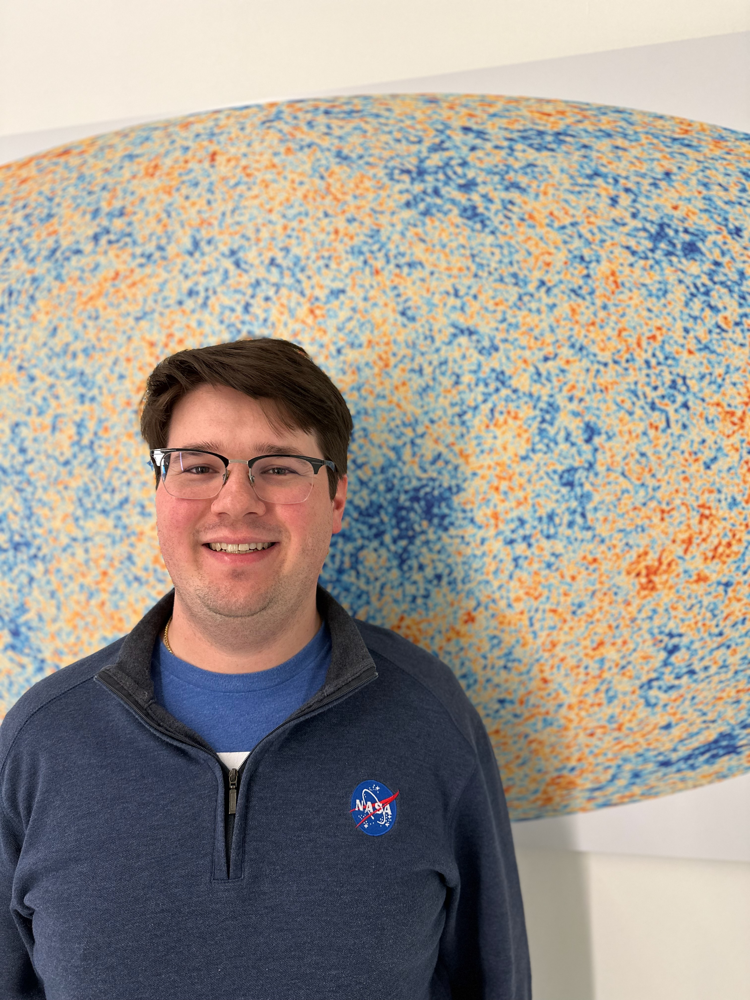

I'm an astrophysicist interested in millimeter-wave instrumentation, Cosmic Microwave Background observations, galaxy cluster observations with the Sunyaev-Zel'dovich Effect, and observations of dusty star forming galaxies and galactic star forming regions at millimeter wavelengths.
I am currently an NSF Astronomy and Astrophysics Postdoctoral Fellow at the University of Massachusetts Amherst where I work on the TolTEC camera on the 50-meter Large Millimeter Telescope located at an altitude of 4600 meters on Sierra Negra in Mexico. I am the SZ Effect Science Working Group lead on the TolTEC project and I am a significant leader of the data analysis and mapmaking efforts of the project. Previously I designed and fabricated the metamaterial anti-reflection coating for the silicon optics in TolTEC.
Please feel free to reference my CV for an up to date list of my research efforts and publications.
I have previously been involved in several collaborations:
- I fabricated the metamaterial anti-reflection coatings for the silicon optics for the Low-Frequency optics tube on the Atacama Cosmology Telescope (ACT) and I was a lead remote observing coordinator towards the end of that project.
- I fabricated the metamaterial anti-reflection coatings for the silicon optics for the 150/220 GHz array for the Cosmology Large Angular Scale Surveyor (CLASS).
- On the Simons Observatory (SO) I designed and fabricated the metamaterial anti-reflection coatings for the silicon optics for the Low, Mid, and Ultra-high Frequency arrays on the Small and Large Aperture Telescopes. I also designed and developed the metamaterial anit-reflection coatings for the alumina optics for the LAT.
- I also designed the metamaterial anti-reflection coatings for the silicon optics of the EXperiment for Cryogenic Large-Aperture Intensity Mapping (EXCLAIM).